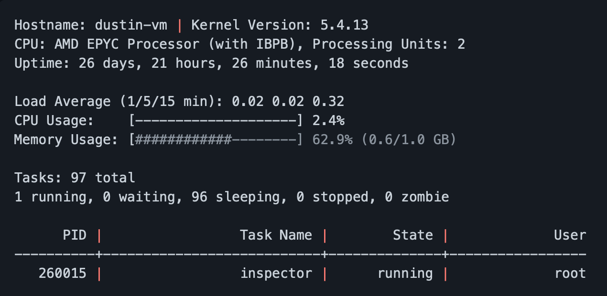

Unix System Inspector
Description
This is a Unix system inspector utility that is similar to the "top" command.
It gives a real-time activity monitor on the system and hardware information through processes and tasks retrieved from proc.
Programming Language(s) Used
- C